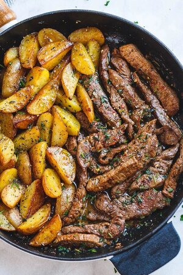

Bulking Staple: Meat and Potatoes

There's nothing simpler that the old fashioned meat and potatoes combo for making your weight go
up, it has the correct combination of macros, flavor, and easyness of preparation.
Is just an easy recipe, and is virtually impossible to mess it up!
So let's beging with the list of ingredients:
Ingredients:
- 1 large sirloin
- 1 tsp garlic and herb seasoning
- 5 large gold potatoes
- 1 tbsp olive oil
- 2 tbsp butter
- 1/2 tbsp minced garlic
- 1 tbsp freshly chopped parsley
- 1 tbsp freshly chopped oregano
- 1 tbsp freshly chopped rosemary
- 1 cup freshly chopped green or red peppers
Steps:
- Heat a large skillet with oil and add cut potatoes, garlic, parsley, oregano, rosemary and one tablespoon butter. Heat on medium heat covered for five minutes until potatoes become tender. Fry on high heat for five minutes on each side to brown the potatoes.
- Add in the peppers
- Season and cut the sirloin into small pieces to match the potatoes.
- Sear the the steak in the same skillet for about five minutes. Add the other tablespoon of butter to sear along with the steak. The steak won't take very long to cook just until the outsides are browned.
- Now that your potatoes and steak are fork tender, enjoy this simple and hearty meal!